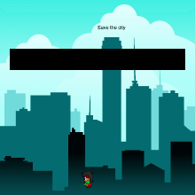
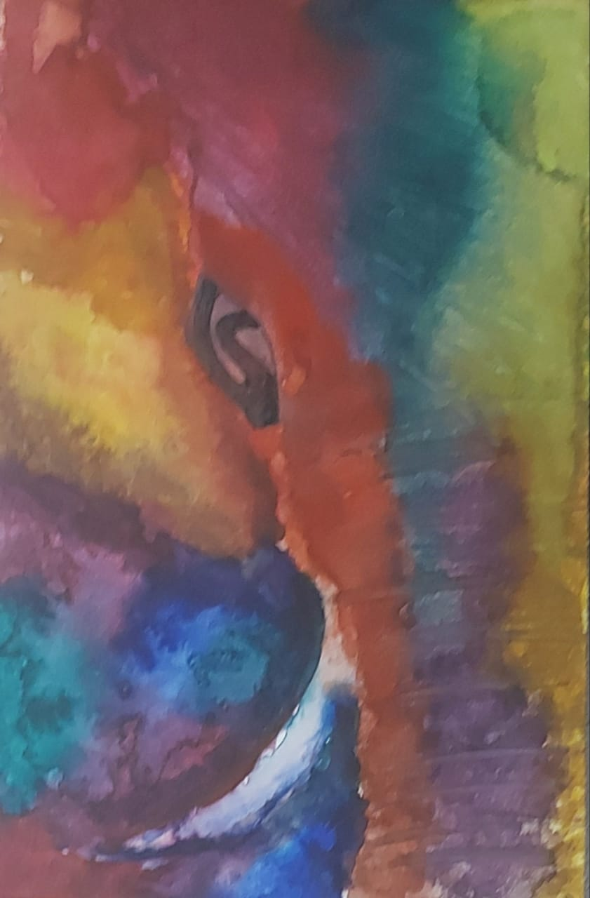
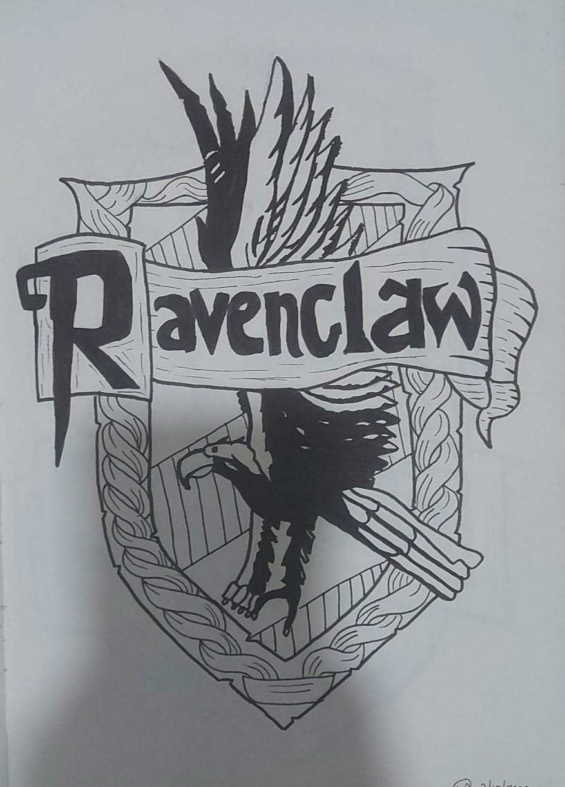
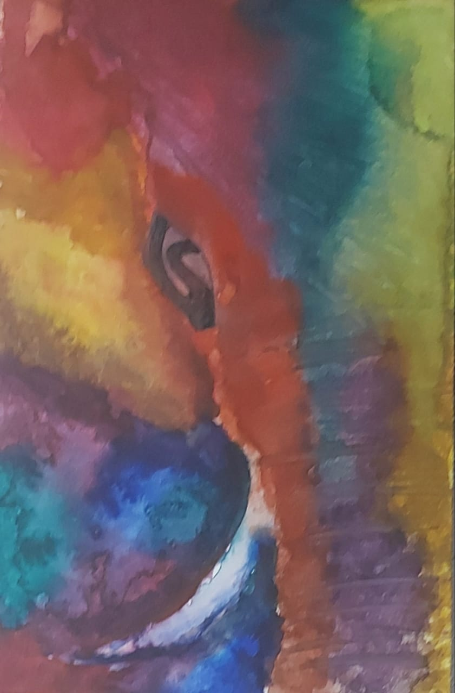
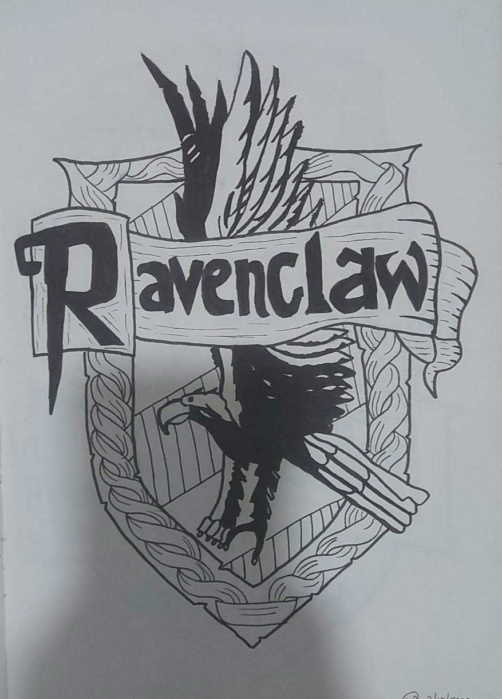
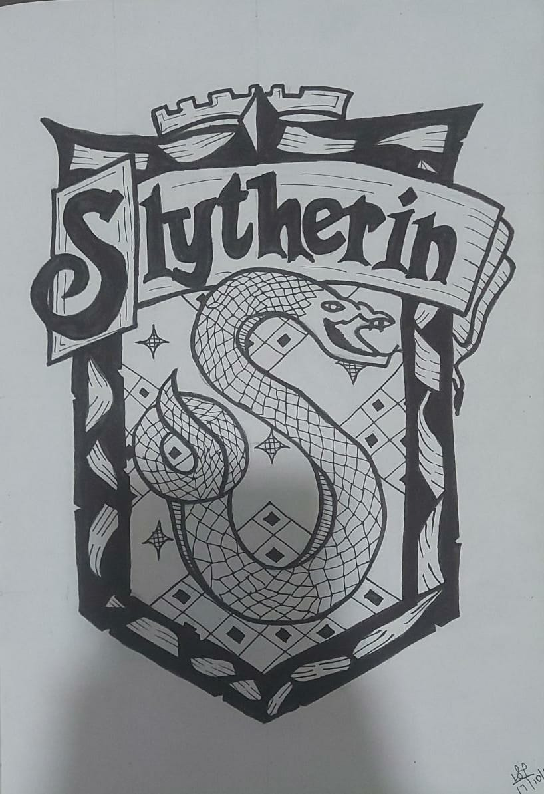
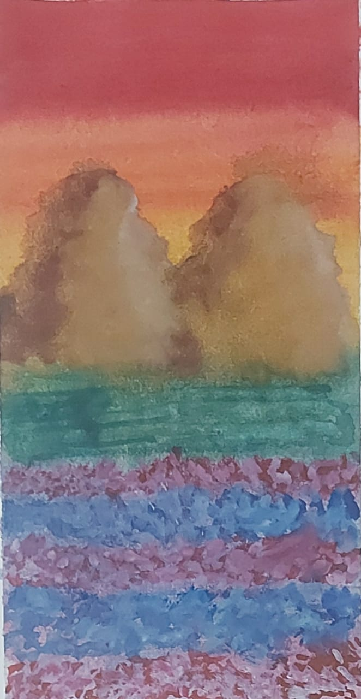
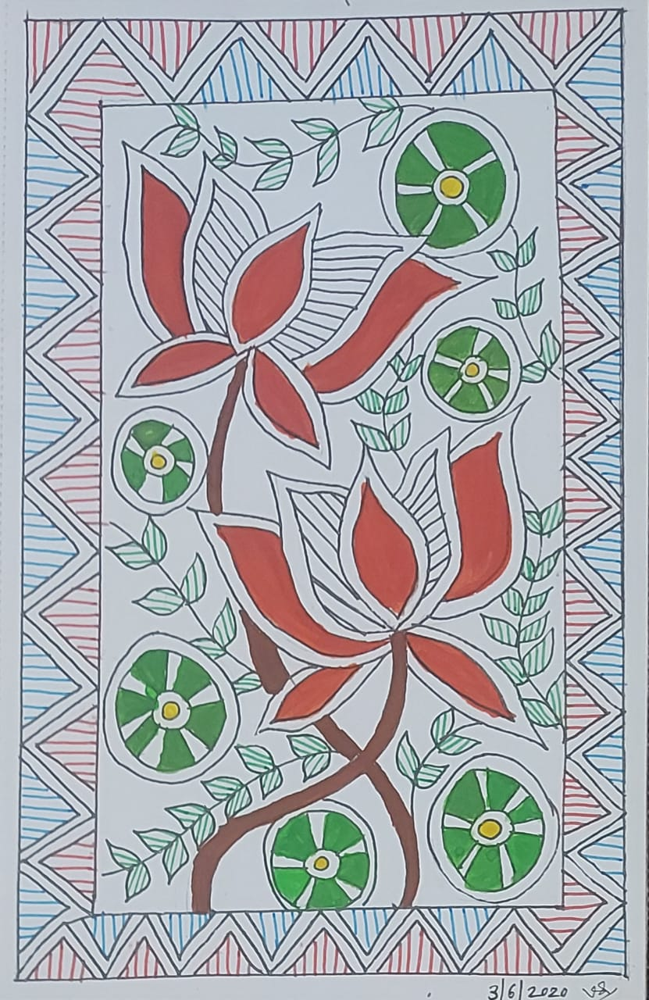

Varchasvi Pandey
Hi there,
welcome to my website, here you can gather information about me,
hope you enjoy as you browse through my website
About
Hi There!
I'm Varchasvi. Welcome to my about page. Here are somethings about me. I am eleven years old. My Birthday is on 20th May, I was born in the year 2009. I am a student of claass 7th and I study in Villa Theresa High School, Mumbai-India. My favourite colours are all pastel shades. I love reading books, both fiction and non-fiction. My favourite sports inlude, badminton, swimming and cycling. I am currently learning coding and kathak, I also enjoy drawing. You can view some of my artwork in the MY WORK section. I also enjoy studying, my favourite subjects are Science And Maths
Some Of My Favourite Books:
Click on them to know more about these books

Harry Potter And The Order Of The Phoenix
Now in his fifth year at Hogwarts, Harry learns that many in the wizarding community do not know the truth of his encounter with Lord Voldemort. Cornelius Fudge, minister of Magic, appoints his toady, Dolores Umbridge, as Defense Against the Dark Arts teacher, for he fears that professor Dumbledore will take his job. But her teaching is deficient and her methods, cruel, so Harry prepares a group of students to defend the school against a rising tide of evil.

Harry Potter And The Half Blood Prince
Two Horcruxes, Riddle's diary from Harry Potter and the Chamber of Secrets and a ring belonging to Voldemort's grandfather, have already been destroyed; four others remain. Near the end of the year, Harry and Dumbledore journey to a cave to retrieve a Horcrux, Slytherin's locket.

Harry Potter And The Deathly Hallows
After Voldemort takes over the Ministry of Magic, Harry, Ron and Hermione are forced into hiding. They try to decipher the clues left to them by Dumbledore to find and destroy Voldemort's Horcruxes.

The Kid Who Came From Space
A small village in the wilds of Northumberland is rocked by the disappearance of twelve-year-old Tammy. Only her twin brother, Ethan, knows she is safe – and the extraordinary truth of where she is. It is a secret he must keep, or risk never seeing her again. But that doesn't mean he's going to give up.

Fortune's Magic Farm
Everything changes when ten-year-old Isabelle discovers that she is the heir to Fortune's Farm, a wondrous place where the last vestiges of magic grow. For as long as she can remember, she's longed to escape her home in Runny Cove, a village where it never stops raining, and where she is forced to work at Mr.

Five On A Treasure Island
Five On A Treasure Island is one of the books of Enid Blyton's Famous Five series. The story follows the journeys of Dick, Julian, Anne, Georgina and their dog Timmy. Enid Blyton is one of the most read and adored children's writers and the Famous Five is a series that won her a lot of accolades.

The Room On The Roof
Room on the Roof is about an orphaned boy named Rusty who has no real family after his parents' death. He is very lonely and sad and even though he lives with his guardian (Mr. John Harrison), he doesn't feel at home.

Fellowship Of The Ring
The future of civilization rests in the fate of the One Ring, which has been lost for centuries. Powerful forces are unrelenting in their search for it. But fate has placed it in the hands of a young Hobbit named Frodo Baggins, who inherits the Ring and steps into legend. A daunting task lies ahead for Frodo when he becomes the Ringbearer - to destroy the One Ring in the fires of Mount Doom where it was forged.
My Work
As I mentioned earlier, I am still in school. But, You can view some of my projects I made and My drawings. iIHOPE YOU ENJOY:
Apps
Games


Chat-Bot
My Drawings
 



  

Inspiration
Hello, Again!
Here are some of the people who have inspired me in the field of Art and Writing.
Click on their pictures to go to their websites
Their discription is given below.
To know more about them click on the the link below their description

Chloe Rose
I have been drawing my entire life, but during high school, took it more seriously at the age of 16.
She specialize mostly in digital painting in my art career, and in my online video career.
I have worked with many brands including Skillshare, Wix, and Disney

J.K. Rowling
J. K. Rowling, is a British author and philanthropist.
She is best known for writing the Harry Potter fantasy series, which has won multiple awards and sold more than 500 million copies, becoming the best-selling book series in history.